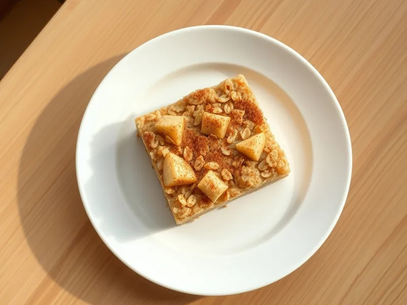

Овсянка, запечённая с яблоком и корицей
Запечённая овсянка с яблоком, которая режется на порционные куски
45 мин3 порц.346 ккал на порциюБ 12 · Ж 11 · У 50Американская кухня
Открыть в приложении: порции, таймеры, список покупок
Продукты на 3 порц.
- Овсяные хлопья1,5 стак.
- Молоко300 мл
- Яйцо куриное1 шт
- Яблоки1 шт
- Мёд1 ст. л.
- Корица1 ч. л.
- Разрыхлитель1 ч. л.
- Сливочное масло10 г
- Соль1 щеп.
Как готовить
- Разогрейте духовку до 180 °C (средний жар) и смажьте небольшую форму сливочным маслом.
- Смешайте в миске овсяные хлопья, разрыхлитель, корицу и соль.
- В другой миске взбейте вилкой яйцо с молоком и мёдом 1 минуту.
- Очистите яблоко от сердцевины и нарежьте кубиками 1 см, половину смешайте с хлопьями.
- Выложите хлопья в форму, залейте молочной смесью и разложите сверху оставшиеся кубики яблока.
- Запекайте 30-35 минут при 180 °C (средний жар), пока верх не станет золотистым, а середина не перестанет дрожать.
- Дайте постоять 5 минут и нарежьте на порции.
Совет. Запеканку можно испечь вечером: в холодильнике она хранится 3 дня, утром её достаточно прогреть 1 минуту в микроволновке.